Trees up to 8 m tall.
15 ಮೀ. ಎತ್ತರದವರೆಗೆ ಬೆಳೆಯುವ ಮರಗಳು.
8 മീറ്റര് വരെ ഉയരമുളള മരങ്ങള്.
மரங்கள், 8 மீ. உயரம் வரை வளரக்கூடியது.
Bark dark grey, slightly rough; blaze light orange.
ಕಿರುಕೊಂಬೆಗಳು ದುಂಡಾಗಿದ್ದು ಸೂಕ್ಷ್ಮ ಮೃದುತುಪ್ಪಳದಿಂದ ಕೂಡಿರುತ್ತವೆ.
ചെറുതായി പരുക്കനായ ഇരുണ്ട നിറത്തിലുളള പുറംതൊലി; വെട്ടുപാടിന് ഇളം ഓറഞ്ച് നിറമാണ്.
மரத்தின் பட்டை கரும்சாம்பல் நிறமுடையது, சொரசொரப்பானது; உள்பட்டை வெளிறிய ஆரஞ்சு நிறமானது.
Branchlets subterete, glabrous, drooping.
ಎಲೆಗಳು ಸರಳವಾಗಿದ್ದು ಪರ್ಯಾಯ ಮಾದರಿಯಲ್ಲಿ ಜೋಡಣೆಗೊಂಡಿದ್ದು ಕಾಂಡದ ಎರಡೂ ಕಡೆ ಎದುರು ಬದರಿನ ಸಾಲಿನಲ್ಲಿರುತ್ತವೆ;ಕಾವಿನೆಲೆಗಳು ಉದುರಿ ಹೋಗುವಂತವು; ತೊಟ್ಟುಗಳು 1.2 -2 ಸೆಂ.ಮೀ. ವರೆಗಿನ ಉದ್ದ ಹೊಂದಿದ್ದು ತುದಿಯಲ್ಲಿ ಊದಿಕೊಂಡಿರುತ್ತದೆ ಮತ್ತುಮೃದು ತುಪ್ಪಳದಿಂದ ಕೂಡಿರುತ್ತದೆ; ಪತ್ರಗಳು 17-30X6-10ಸೆಂ.ಮೀ.ಗಾತ್ರ ಹೊಂದಿದ್ದುಚತುರಸ್ರದ ಆಕಾರ ಹೊಂದಿದ್ದು,ಥಟ್ಟನೆ ಬಾಲರೂಪಿ- ಕ್ರಮೇಣ ಚೂಪಾಗುವ ತುದಿ,ಚೂಪಾದ ಮತ್ತು ಅಸಮವಾದ ಬುಡ ಮತ್ತು ನಯವಾದ ಅಂಚು ಹೊಂದಿರುತ್ತವೆ; ಮೇಲ್ಮೈ ತೊಗಲನ್ನೋಲುವ ಮಾದರಿಯಲ್ಲಿರುತ್ತದೆ;ಪತ್ರದ ತಳ ಭಾಗದ ಮಧ್ಯ ನಾಳ ಸೂಕ್ಷ್ಮ ಮೃದು ತುಪ್ಪಳದಿಂದ ಕೂಡಿರುತ್ತದೆ;ಮಧ್ಯನಾಳ ಪತ್ರದ ಮೇಲ್ಭಾಗದಲ್ಲಿ ಮೇಲೆದ್ದಿರುತ್ತದೆ;ಎರಡನೇ ದರ್ಜೆಯ ನಾಳಗಳು 6-8 ಜೋಡಿಗಳಿದ್ದು ಅಗ್ರದ ಕಡೆಗೆ ಓರೆಯಾಗಿ ಆರೋಹಣಗೊಳ್ಳುತ್ತವೆ;ಮೂರನೇ ದರ್ಜೆಯ ನಾಳಗಳು ಕಡಿಮೆ ಅಂತರದಲ್ಲಿದ್ದು ಲಂಬ ರೇಖೆಗೆ ಸಮಕೋನದಲ್ಲಿದ್ದು ಎಲೆದಿಂಡಿಗೆ ಅಡ್ಡವಾಗಿ ಕೂಡುವಂತವು.
തൂങ്ങിക്കിടക്കൂന്ന, അരോമിലമായ ഏതാണ്ട് ഉരുണ്ട ഉപശാഖകള്.
சிறிய நுனிக்கிளைகள் குறுக்குவெட்டுத் தோற்றத்தில் வளையம் போன்றது, உரோமங்களற்றது, கிளைகள் தொங்கியவை.
Leaves simple, alternate, distichous; petiole 0.7-1.6 cm long, swollen at both ends, canaliculate, glabrous; lamina 9-26 x 2.5-8.5 cm, usually lanceolate, apex gradually acuminate or subacute, base rounded or acute, sometimes subattenuate, margin entire, coriaceous, glabrous; midrib raised above; secondary_nerves 6-11 pairs, ascending towards apex; tertiary_nerves reticulo-percurrent.
ಹೂಗಳು ಹಳೆಯ ಕವಲುಗಳ ಮೇಲಿನ ಕಿರು ಉದ್ದದ ವೃಂತಗಳ ಮೇಲಿನ ಗುಚ್ಛಗಳಲ್ಲಿದ್ದು ಬಿಳಿ ಬಣ್ಣ ಹೊಂದಿರುತ್ತವೆ;ಕೇಸರಗಳು ಅನೇಕ..
ലഘുവായ ഇലകള്, ഏകാന്തരമായി, തണ്ടിന്റെ രണ്ടുഭാഗത്ത് മാത്രമായടുക്കിയ വിധത്തിലാണ്; ചാലുളള, അരോമിലമായ, രണ്ടറ്റവും വീര്ത്ത ഇലഞെട്ടിന് 0.7 സെ.മീ മുതല് 1.6 സെ.മീ വരെ നീളം; പത്രഫകത്തിന് 9 സെ.മീ മുതല് 2.6 സെ.മീ വരെ നീളവും 2.5 സെ.മീ മുതല് 8.5 സെ.മീ വരെ വീതിയും, സാധാരണയായി കുന്താകൃതിയുമാണ്, പത്രാഗ്രം സാവധാനം അവസാനിക്കുന്ന ദീര്ഘാഗ്രമോ ഉപനിശിതമോ ആവാം, പത്രാധാരം വൃത്താകാരമോ നിശിതമോ ആവാം, ചിലപ്പോള് ഏതാണ്ട് ചെറിയ അകവളവോടെ സാവധാനം നേര്ത്തവസാനിക്കുന്ന വിധത്തിലാവാം, അരികുകള് അവിഭജിതമാണ്, ചര്മ്മില പ്രകൃതം, അരോമിലം; മുഖ്യസിര മുകളില് ഉയര്ന്നതാണ്; അഗ്രത്തോടടുത്ത് ആരോഹണക്രമത്തില് പോകുന്ന 6 മുതല് 11 വരെ ജോഡി ദ്വിതീയ ഞരമ്പുകള്; ജാലിത പെര്കറന്റ് വിധത്തിലുളള ത്രിതീയ ഞരമ്പുകള്.
இலைகள் தனித்தவை, மாற்றுஅடுக்கமானவை, இருநெடுக்கு வரிசையிலையடுக்கம் (டைஸ்டிக்கஸ்); இலைக்காம்பு 0.7-1.6 செ.மீ. நீளமானது, காம்பின் இருமுனைகளும் உப்பியவை, குறுக்குவெட்டுத் தோற்றத்தில் கேனாலிகுலேட், உரோமங்களற்றவை; இலை அலகு 9-26 X 2.5-8.5 செ.மீ., பொதுவாக ஈட்டி வடிவானது, அலகின் நுனி சீரான அதிக்கூரியது அல்லது கூரியது போன்றது, அலகின் தளம் வட்டமானது அல்லது கூரியது, சிலசமயங்களில் அட்டனுவேட் போன்றது, அலகின் விளிம்பு முழுமையானது, கோரியேசியஸ், உரோமங்களற்றது; மையநரம்பு அலகின் பரப்பைவிட மேலெழும்பியது; இரண்டாம் நிலை நரம்புகள் 6-11 ஜோடிகள், நுனி நோக்கி வளைந்தவை; மூன்றாம் நிலை நரம்புகள் வலைப்பின்னல் பெர்க்கரண்ட்.
Flowers unisexual, solitary or in short fascicles, white.
ಬೆರ್ರಿಗಳು ಗೋಳಾಕಾರದಲ್ಲಿದ್ದು 15 ಸೆಂ.ಮೀ.ವರೆಗಿನ ಅಡ್ಡಗಳತೆ ಹೊಂದಿರುತ್ತವೆ ಮತ್ತುಕಡು ಕಂದು ಮೃದುತುಪ್ಪಳದಿಂದ ಕೂಡಿರುತ್ತವೆ ಹಾಗೂ ದಾರುವಿನಂತಿರುತ್ತವೆ; ಬೀಜಗಳು ಅನೇಕ.
ഒറ്റക്കായോ കുറിയ കൂട്ടങ്ങളായോ ഉണ്ടാകുന്ന വെളുത്ത പൂക്കള് ഏകലിംഗികളാണ്.
மலர்கள் ஒர்பாலானவை, தனித்தவை அல்லது சிறிய தொகுப்பாக அமைந்தவை, வெள்ளை நிறமானது.
Berry, globose, to 6.5 cm across, brown tomentose, pericarp woody; seeds numerous.
ധാരാളം വിത്തുകളുളള കായ, കനത്തില് തവിട്ട് രോമിലമായ, മരംപോലുളള ഫലഭിത്തിയുളള, 6.5 സെ.മീ കുറുകേയുളള ഗോളാകാര ബെറിയാണ്.
முழுச்சதைகனி (பெர்ரி), கோளவடிவானது, 6.5 செ.மீ. குறுக்களவுடையது, ப்ரவுன் நிறமான உரோமங்களுடையது, கனியின் வெளிப்புற பகுதி (பெரிகார்ப்) தடித்தவை; விதைகள் எண்ணற்றவை.
 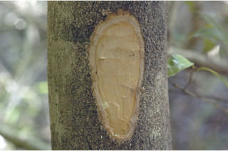
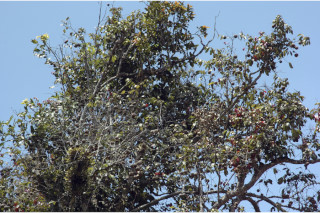
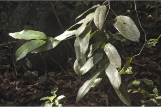
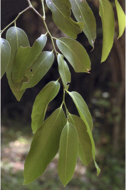
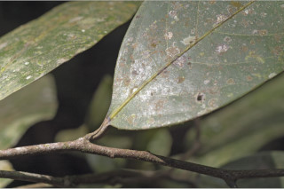
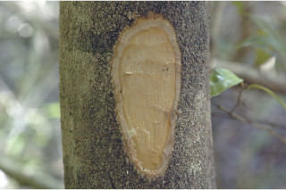
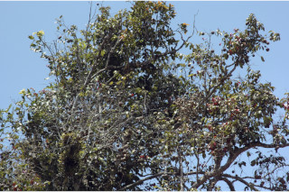
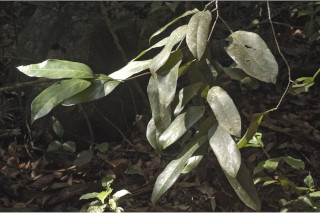
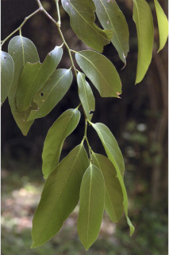
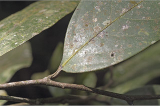

 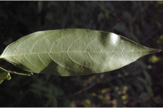
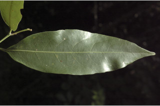
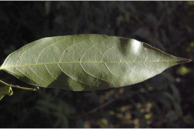
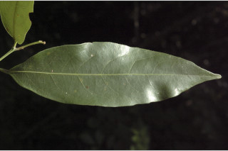
 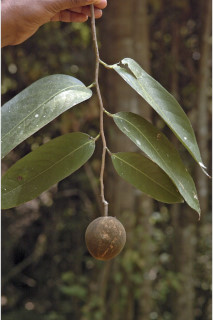
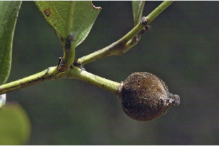
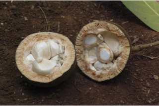
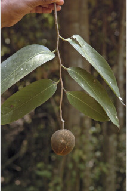
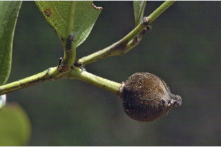
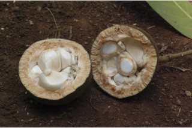